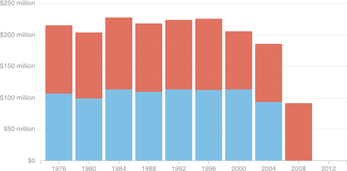

Presidential Candidates Relying Less On Public Funding (In 2015 Dollars)
Participation in public funding has declined in recent elections. In 2000 and 2004, President George W. Bush turned down public matching funds in the primaries; Democrat John Kerry did in 2004, as well. In 2008, Republican nominee John McCain rejected the primary funds but accepted the public grant in the general election, while Democratic nominee Barack Obama took neither. In 2012, President Obama and Republican Mitt Romney both refused all public financing.
